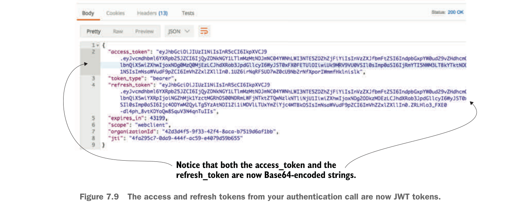

The access and refresh tokens from your authentication call are now JWT tokens.
Now, if you rebuild your authentication service and restart it, you should see a JWT-based token returned. Figure 7.9 shows the results of your call to the authentication service now that it uses JWT.
The actual token itself isn’t directly returned as JavaScript. Instead, the JavaScript body is encoded using a Base64 encoding. If you’re interested in seeing the contents of a JWT token, you can use online tools to decode the token. I like to use an online tool from a company called Stormpath. Their tool, http://jsonwebtoken.io, is an online JWT decoder. Figure 7.10 shows the output from the decoded token.